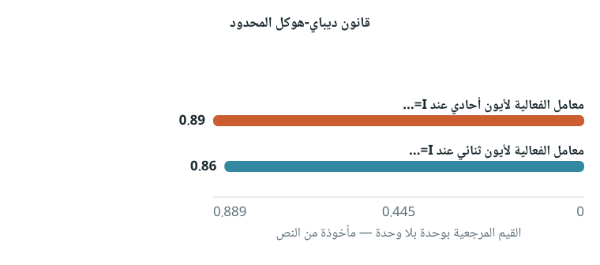

قانون ديباي-هوكل المحدود
Debye-Hückel limiting law
قانون ديباي-هوكل المحدود يعطي معامل الفعالية لأيون في محلول مخفف من قوته الأيونية: log γ = −A·z²·√I، حيث A = 0.509 عند 25 °C في الماء. يفسر انحراف المحاليل الأيونية عن السلوك المثالي ويُستعمل في تصحيح ثوابت التوازن.
في المحلول المخفف جداً، يكون الغلاف الأيوني حول كل أيون رقيقاً، فيمكن حساب تأثيره نظرياً من الكهرباء الساكنة والحركة الحرارية. والنتيجة أن لوغاريتم معامل الفعالية يتناسب مع مربع الشحنة ومع جذر القوة الأيونية: log γ = −A·z²·√I. والثابت A يعتمد على درجة الحرارة وثابت العزل للمذيب، وقيمته في الماء عند 25 °C هي 0.509. مثال: أيون أحادي الشحنة في محلول قوته الأيونية 0.0100 mol/L: log γ = −0.509×1×0.100 = −0.0509، فيكون γ = 0.889.
كيف تعمل الظاهرة؟
كل أيون موجب يجذب حوله سحابة من الأيونات السالبة، وكل سالب يجذب سحابة موجبة. وهذه السحابة تُضعف المجال الكهربائي الذي يُحسه الأيون، فيقل تفاعله مع بقية المحلول. وقوة التضعيف تعتمد على كثافة السحابة، أي على القوة الأيونية، وعلى شحنة الأيون نفسه. ولهذا ينخفض معامل الفعالية بانخفاض القوة الأيونية، ويقترب من الواحد عند التخفيف اللانهائي حيث تصبح السحابة مفرغة.
العلاقة بالأرقام
log γ = −A·z²·√I، وA = 0.509 في الماء عند 25 °C. مثال: I = 0.0100، z = 1 → log γ = −0.509×0.100 = −0.0509، γ = 0.889. ولأيون ثنائي في المحلول نفسه: log γ = −0.509×4×0.100 = −0.204، γ = 0.626. والفرق بين المعاملين يفسر لماذا تُصحَّح ثوابت التوازن بقسمة على حاصل معاملات الفعالية.
مفاهيم متقاربة
يُفرَّق بين القانون المحدود والممتد: المحدود log γ = −A·z²·√I، والممتد log γ = −A·z²·√I/(1+B·a·√I)، والثاني أدق حتى 0.1 mol/L. ويُفرَّق بين معامل الفعالية الأحادي والمتوسط: الأول لأيون واحد، والثاني متوسط الأيونات في الملح. ويُفرَّد بين الفعالية والتركيز: الفعالية = γ × التركيز. وأخيراً يُفرَّق بين القانون النظري والمعاملات التجريبية كمعاملات ديفيز، التي تصلح لقوى أيونية أعلى.
حدود التطبيق
القانون صالح حتى قوة أيونية نحو 0.001 mol/L فقط، وفوقها يلزم الشكل الممتد. ولا يصف المحاليل التي فيها أزواج أيونية أو تجمّع، حيث تختفي السحابة. ولا يصلح للمحاليل غير المائية، لأن A يعتمد على ثابت العزل. ولا يعطي الاتجاه الصحيح عند قوى أيونية عالية، حيث يرتفع المعامل بدل أن ينخفض.

| الكمية | القيمة | المصدر |
|---|---|---|
| معامل الفعالية لأيون أحادي عند I=0.0100 | 0.889 بلا وحدة | [1] |
| معامل الفعالية لأيون ثنائي عند I=0.00100 | 0.862 بلا وحدة | [1] |
| عدد أفوجادرو N_A | 6.022 140 76×10²³ mol⁻¹ | [1] |
المصادر
- 1 CODATA Value: Avogadro constant — NIST — CODATA 2022 recommended values (2024). physics.nist.gov/cgi-bin/cuu/Value?na · اطُّلع عليه 2026-11-22
- 2 CODATA Value: elementary charge — NIST — CODATA 2022 recommended values (2024). physics.nist.gov/cgi-bin/cuu/Value?e · اطُّلع عليه 2026-11-22
- 3 CODATA Value: molar gas constant — NIST — CODATA 2022 recommended values (2024). physics.nist.gov/cgi-bin/cuu/Value?r · اطُّلع عليه 2026-11-22
استشهد بهذا المصطلح
الصيغتان مبنيتان من بيانات الصفحة نفسها: العنوان والتاريخ ورابط النسخة المنشورة.
قانون ديباي-هوكل المحدود — Debye-Hückel limiting law. (2026). ديوان المعرفة — انفراد. https://infiradev.com/diwan/terms/term-debye-huckel-limiting-law.html
@misc{term-debye-huckel-limiting-law2026,
title = {قانون ديباي-هوكل المحدود},
titleaddon = {Debye-Hückel limiting law},
howpublished = {{ديوان المعرفة — انفراد} — مرجع علمي عربي},
year = {2026},
url = {https://infiradev.com/diwan/terms/term-debye-huckel-limiting-law.html},
urldate = {2026-11-26},
note = {مراجعة علمية: hermes (مراجعة معتمدة 2026-11-26)}
}
راجعه: hermes (مراجعة معتمدة 2026-11-26) · 2026-11-26 · آخر تحديث 2026-11-22